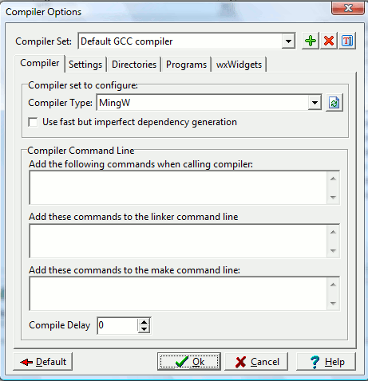

The first tab in the Compiler Options dialog allows you to specify the
name of your compiler set and any additional commands you wish to add
to the compiler or makefile instructions. Recall that wxDev-C++ allows
you to use different compiler sets to build the same project.
Note that the name of the compiler set is just a tag. It does not have
to be the name of the actual compiler you wish to use. For example,
instead of the set name "Default GCC compiler", I can define a compiler
set named "Best compiler in the World 1", but use the compiler type of
MingW (i.e. the MingW gcc compiler). The buttons
allow you to add, delete, and rename a compiler set respectively.
Remember that this configuration window
will change the global
settings used by all of your projects with this compiler set.
If you want to add custom compiler/linker settings for a
particular project and not affect other projects, then you want to go
to the Project menu and select Project Options.

Compiler set to configure
Here,
you actually specify which type of compiler you wish to use with this
compiler set. The default compiler that comes bundled with wxDev-C++ is
MingW gcc. We also support MS VC 2003, 2005, and 2008
compilers.
Add the following commands when calling compiler
Here
you can specify additional command-line options to be passed to the gcc
compiler when compiling your project or file. Check the gcc
manual for a list of command-line arguments.
Add these commands to the linker command-line
Here you can specify options to be
passed onto the linker (ld.exe).
Compile delay
This option is present to provide a
delay before compiling. Normally, you will not use this. If make
complains of the timestamp being invalid, try specifying a delay here.
Use fast but imperfect dependency generation
By
default, Dev-C++ will check all files and headers for dependancy
information, and update the makefile accordingly. If you find that it's
taking too much time, you can prevent this by enabling this option.